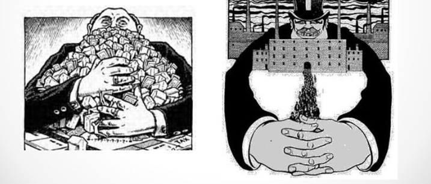

Durante la Rivoluzione Industriale, si assistette a una fase di consolidazione industriale in cui le imprese crebbero in dimensioni e potere. Questo portò alla formazione di monopoli o oligopoli in vari settori industriali, dove grandi imprese o gruppi di imprese detenevano il controllo quasi completo di determinati mercati o settori, limitando la concorrenza e stabilendo prezzi e condizioni di mercato. Il monopolio è una situazione in cui un'azienda detiene il controllo totale su un settore o un mercato specifico, eliminando così la concorrenza. In un monopolio, il venditore controlla l'intera offerta e può quindi influenzare direttamente il prezzo,le ferrovie e l'industria del petrolio furono notevolmente influenzati da questi monopoli. Aziende come la Standard Oil, fondata da John D. Rockefeller, divennero esempi di monopoli che controllavano gran parte del settore petrolifero. Per evitare leggi antimonopolio, alcune grandi imprese crearono trust o società di controllo, che permettevano loro di mantenere un'apparenza di legalità mentre controllavano diverse aziende. Tuttavia, questo può essere cattivo per i consumatori perché l'azienda può fissare prezzi più alti e non c'è molta scelta per loro, anche a una situazione in cui le persone pagano di più per i prodotti e quindi si trovano in una situazione peggiore rispetto a quando c'è concorrenza. Durante la Rivoluzione Industriale, i monopoli suscitarono preoccupazioni riguardo alla concentrazione di potere economico nelle mani di pochi individui o aziende. Queste preoccupazioni portarono a una maggiore attenzione da parte dei governi sull'antitrust e sulla regolamentazione economica al fine di preservare la concorrenza e prevenire abusi di potere economico.